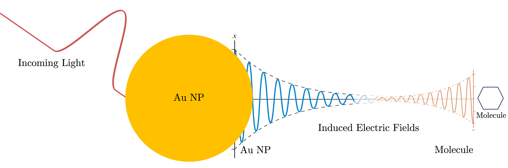

PlasMol: Simulating Plasmon-Molecule Interactions



PlasMol is an open-source tool for simulating plasmon-molecule interactions, combining classical Finite-Difference Time-Domain (FDTD) electromagnetics with quantum Real-Time Time-Dependent Density Functional Theory (RT-TDDFT). Built on Meep for FDTD and PySCF for quantum calculations, it enables studies of nanoparticle-molecule systems, such as plasmon-enhanced spectroscopy or SERS.
Whether you're running isolated NP simulations, molecular RT-TDDFT, or full hybrid PlasMol runs, this package provides a flexible framework. For more details, see the About page.
Key Features
- Simulation Modes:
- Classical FDTD: Simulate nanoparticles (e.g., gold/silver spheres) with custom sources.
- Quantum RT-TDDFT: Compute molecular responses like induced dipoles or absorption spectra.
- Full PlasMol: Couple FDTD and RT-TDDFT for plasmon-molecule dynamics.
- Customizable Sources: Continuous, Gaussian, chirped, or pulsed fields.
- Outputs: CSVs for fields/dipoles, HDF5 images/GIFs, absorption spectra, and checkpoints.
- Propagators: Step, RK4, or 2nd-order Magnus for RT-TDDFT.
- Extensible: Add custom tracking (e.g., SERS) via code injections—see API Reference.
Quick Start
Installation
PlasMol requires Python 3.8+ and dependencies like Meep and PySCF. For full steps, see the Installation Guide.
git clone https://github.com/kombatEldridge/PlasMol.git
cd PlasMol
pip install -e .
Basic Usage
Run simulations via command line with an input file (e.g., from templates/):
python src/main.py -f templates/template-plasmol.in -vv -l plasmol.log -r
-f: Input file path.-vv: Debug logging.-l: Log file.-r: Restart (clears old outputs).
For detailed instructions and examples, see Usage and Tutorials.
Example: Full PlasMol Simulation
Input snippet (from template-plasmol.in):
start general
dt 0.1
t_end 4000
end general
start quantum
start rttddft
start geometry
O 0.0 0.0 -0.13
H 1.49 0.0 1.03
H -1.49 0.0 1.03
end geometry
units bohr
basis 6-31g
xc pbe0
propagator magnus2
end rttddft
end quantum
start classical
start source
sourceType continuous
sourceCenter -0.04
sourceSize 0 0.1 0.1
frequency 5
end source
start simulation
cellLength 0.1
pmlThickness 0.01
end simulation
start object
material Au
radius 0.03
center 0 0 0
end object
end classical
Outputs include field CSVs and optional GIFs/spectra.
Documentation
- Installation Guide: Step-by-step setup.
- Usage: Input file structure and parameters.
- Tutorials: Hands-on examples for classical, quantum, and full simulations.
- API Reference: Code details for customization.
- Contributing: How to add features or report issues.
- About: Project history, releases, and citations.
Contributing
Contributions are welcome! Whether fixing bugs, adding propagators/sources, or improving docs, check the Contributing Guide for details. Open an issue or PR on GitHub.
We especially need help with test suites, new nanoparticle shapes, and SERS tracking.
License
Acknowledgments
- Built on Meep, PySCF, NumPy, and more.
- Contributors: Brinton Eldridge.
- Advisors: Dr. Daniel Nascimento, Dr. Yongmei Wang.
Contact
- Email: bldrdge1@memphis.edu
- GitHub: kombatEldridge
- LinkedIn: Brinton Eldridge
Star the repo if you find it useful! ⭐